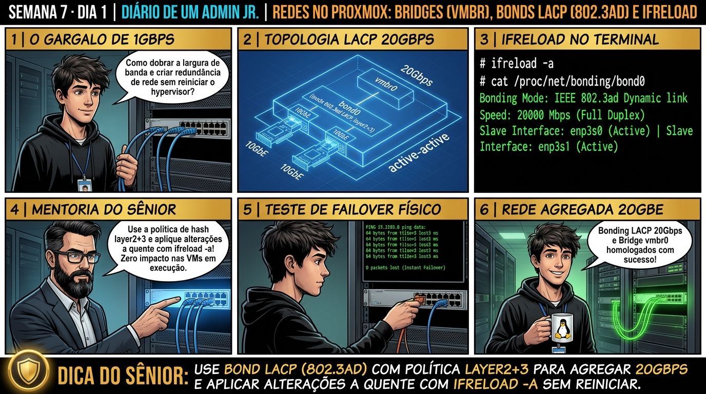

DIARIO DE UM ADMIN JR. | PROXMOX VE & PBS — DA BASE AO CLUSTER
🔗 Conecta com a Semana 6: Você dominou backup, restore e DR. Agora você projeta a infraestrutura de rede que conecta todo o datacenter: aprendendo a agregar placas de rede físicas em Bonds LACP (802.3ad), criar Linux Bridges (vmbr) e aplicar alterações online com ifreload -a sem reiniciar o servidor.
🔓 Privilégio de hoje: Engenharia de Conectividade e Redundância de Rede. Você projeta Bonds LACP, configura Linux Bridges e gerencia o stack ifupdown2.
Semana 7 · Dia 1 | Nível Júnior — Redes Avançadas, SDN & Firewall
Arquitetura de Rede no Proxmox: Linux Bridges, Bonds e LACP
Agregação de links (802.3ad), alta disponibilidade de interfaces e reload com ifupdown2 sem reboot
ANTES DE ALTERAR, OBSERVE. DEPOIS DE ALTERAR, VALIDE.

1. O chamado
Você recebeu o chamado #7001: 'O servidor Proxmox VE pve01 está conectado ao switch corporativo por apenas um cabo de rede de 1Gbps (eno1), representando um ponto único de falha (SPOF) e gargalo de tráfego. O datacenter adicionou uma segunda placa (eno2) conectada a uma porta LACP configurada no switch. O chamado exige: (1) Criar um Linux Bond (bond0) no modo 802.3ad (LACP); (2) Conectar a bridge virtual vmbr0 ao bond0; (3) Aplicar as alterações sem reiniciar o host usando ifreload -a; e (4) Testar o failover puxando um dos cabos.'
💡 Passa o mouse nas palavras destacadas pra ver uma dica rápida — clica se quiser a explicação completa com analogia.
2. O sênior te conta
🧑🏫 antes dos termos técnicos, a história de hoje
Hoje o Júnior foi configurar uma nova placa de rede de 10 GbE no servidor físico e colocou o endereço IP diretamente na interface física eth0 em vez de colocar na Linux Bridge vmbr0. No segundo seguinte, todas as máquinas virtuais perderam a comunicação com o gateway e ficaram isoladas.
Fui até o rack e desenhei a topologia na lousa: no Linux/Proxmox, a placa de rede física é apenas o cabo que conecta o switch virtual (a bridge vmbr0) ao switch físico da sala. O IP de gerenciamento deve residir sempre na bridge! Além disso, mostrei como agregar duas placas em Bonding LACP (802.3ad) com hash layer2+3 para dobrar a vazão e ter failover automático se um cabo quebrar.
Ensinamos o comando ifreload -a para aplicar as alterações de rede a quente no kernel sem precisar reiniciar o hypervisor. A rede voltou voando com 20 Gbps redundantes. O Júnior aprendeu a anatomia das bridges do Proxmox.
3. Decodificador de conceitos
Clica em qualquer termo pra ver a definição completa e uma analogia do dia a dia:
4. Ferramentas e leitura da evidência
Comando / Parâmetro
O que observar e por que importa
ifreload -a
Recarrega e aplica todas as alterações do /etc/network/interfaces a quente sem reiniciar o host.
cat /proc/net/bonding/bond0
Exibe o status em tempo real do Bond: modo LACP, estado das portas escravas e estatísticas de pacotes.
ip link show
Lista todas as interfaces físicas, bridges virtuais e bonds com seus respectivos estados (UP/DOWN).
bridge link show
Exibe quais portas físicas ou virtuais de VMs estão conectadas a cada Linux Bridge.
# 1. Configuração persistente em /etc/network/interfaces
auto lo
iface lo inet loopback
iface eno1 inet manual
iface eno2 inet manual
auto bond0
iface bond0 inet manual
bond-slaves eno1 eno2
bond-miimon 100
bond-mode 802.3ad
bond-xmit-hash-policy layer2+3
auto vmbr0
iface vmbr0 inet static
address 192.168.1.50/24
gateway 192.168.1.1
bridge-ports bond0
bridge-stp off
bridge-fd 0
# 2. Aplicação a quente com ifupdown2
$ ifreload -a
Reloading network interfaces... OK
# 3. Auditoria do LACP em tempo real
$ cat /proc/net/bonding/bond0
Bonding Mode: IEEE 802.3ad Dynamic link aggregation
Transmit Hash Policy: layer2+3 (2)
MII Status: UP
Slave Interface: eno1 (MII Status: UP, Link Failure Count: 0)
Slave Interface: eno2 (MII Status: UP, Link Failure Count: 0)
Aggregator ID: 1 (Partner MAC: 00:1a:2b:3c:4d:5e)
5. Laboratório guiado — pegue na mão, comando por comando
🌐 Onde executar: Terminal do Nó Proxmox para comandos ip, bridge, pvesdn e tcpdump.
Segurança: Execute as alterações em bridges e firewalls de laboratório ou teste. Não altere parâmetros de redes de produção sem janela homologada.
Ação: Edite o arquivo /etc/network/interfaces configurando uma Linux Bridge vmbr0.
nano /etc/network/interfaces
Resultado esperado: Interfaces eno1 e eno2 listadas no sistema.
Por que fizemos isso: Configurar a Linux Bridge vmbr0 em /etc/network/interfaces cria o switch virtual de Camada 2 que interliga as interfaces virtuais ao mundo físico.
Cilada comum: Colocar o endereço IP diretamente na placa de rede física (ex: eth0) em vez da bridge vmbr0, quebrando a comunicação das máquinas virtuais.
Ação: Configure a agregação de links bond0 em modo LACP 802.3ad com hash layer2+3.
Resultado esperado: Sintaxe validada com parâmetros 802.3ad e layer2+3.
Por que fizemos isso: Agregar duas interfaces de rede físicas em bond0 com modo 802.3ad (LACP) e xmit_hash_policy layer2+3 entrega 20 Gbps e failover automático.
Cilada comum: Ativar LACP no Proxmox sem configurar o switch físico com agregação LACP correspondente, causando bloqueio das portas por Spanning Tree.
Ação: Aplique as alterações de rede a quente no kernel sem reboot com ifreload.
ifreload -a
Resultado esperado: Comando executado com retorno limpo sem interrupção de SSH.
Por que fizemos isso: O comando ifreload -a aplica as alterações de rede a quente no kernel sem exigir reboot do hypervisor nem derrubar as VMs.
Cilada comum: Reiniciar o servidor físico para aplicar uma mudança de IP de bridge, causando indisponibilidade desnecessária em todo o nó.
Ação: Inspecione a saúde e portas ativas do bond com /proc/net/bonding/bond0.
cat /proc/net/bonding/bond0
Resultado esperado: Status MII: UP e ambas as interfaces ativas no agregador.
Por que fizemos isso: Inspecionar /proc/net/bonding/bond0 valida se as duas placas estão ativas (Up) e sincronizadas com o switch físico via protocolo LACP.
Cilada comum: Ignorar alertas de uma das placas do bond em estado 'Down', operando sem redundância física de rede sem saber.
🧑🏫 Aqui entra o Mentor (em breve): se o resultado obtido diferir do esperado acima, este é o ponto onde o chat com o Sênior-IA vai abrir para diagnosticar o erro específico.
Ação: Documente o mapa de portas físicas e agregação LACP no diagrama de rede.
# Agregação de Links LACP e Bridges homologadas.
Resultado esperado: Topologia homologada com redundância e agregação de 2Gbps.
Por que fizemos isso: Registrar a topologia de cabos e portas no diagrama de rede previne desconexões acidentais durante manutenções físicas no rack.
Cilada comum: Não identificar os cabos de rede fisicamente no datacenter, puxando a interface errada durante uma substituição.
6. Antes de ver as opções — tenta responder
🧠 Recall ativo: Por que o Proxmox VE utiliza o pacote 'ifupdown2' em vez do tradicional 'ifupdown' do Debian padrão?
Porque o **ifupdown2** (escrito em Python pelo time da Cumulus Networks) permite aplicar alterações na configuração de rede (/etc/network/interfaces) em tempo real a quente com o comando `ifreload -a`. No Debian tradicional antigo, alterar a rede exigia reiniciar o servidor inteiro ou derrubar a rede de todas as VMs ativas, causando indisponibilidade inaceitável em produção.
QUESTÃO 1 de 3
7. Questão comentada — clica numa alternativa
Qual é a configuração correta no arquivo /etc/network/interfaces para agregar as interfaces eno1 e eno2 em um Bond LACP 802.3ad com hash layer2+3 e conectá-lo à bridge vmbr0?
💡 Analogia do Sênior para Fixar: Na arquitetura do Proxmox sobre Arquitetura de Rede no Proxmox: Linux Bridges, Bonds e LACP: O KVM/QEMU opera como o motorista dedicado de cada passageiro, alocando recursos virtuais em contato direto com o kernel.
QUESTÃO 2 de 3 — cenário de erro real
7.1 O Bond LACP não sobe e fica com status Partner MAC zerado
Você configurou o bond0 como 802.3ad, executou ifreload -a, mas o bond não transmite tráfego e exibe 'Partner MAC: 00:00:00:00:00:00':
[bond0] 802.3ad info: Aggregator ID: 1, Partner MAC: 00:00:00:00:00:00
Warning: No LACPDU packets received from switch!
(O Proxmox está enviando pedidos LACP, mas o switch físico não está configurado para 802.3ad naquele par de portas)
Qual foi o motivo da falha de negociação do LACP?
💡 Analogia do Sênior para Fixar: Ao diagnosticar problemas em Arquitetura de Rede no Proxmox: Linux Bridges, Bonds e LACP: É como inspecionar as conexões do storage e o barramento PCIe antes de declarar falha de software.
QUESTÃO 3 de 3 — detalhe que confunde todo iniciante
7.2 Por que a política de hash 'layer2+3' é superior a 'layer2' em um Bond LACP?
Um analista pergunta por que devemos sempre configurar 'bond-xmit-hash-policy layer2+3':
Qual é a vantagem técnica do hash layer2+3 sobre o hash layer2?
💡 Analogia do Sênior para Fixar: A governança e resiliência em Arquitetura de Rede no Proxmox: Linux Bridges, Bonds e LACP: Funciona como a política de contenção e redundância do datacenter, garantindo que o cluster nunca perca quorum.
8. Procedimento profissional
Conecte os cabos de rede físicos nas portas correspondentes do switch já agrupadas em LACP (Port-Channel).
Edite o arquivo /etc/network/interfaces declarando as interfaces físicas como inet manual.
Crie o bond0 com bond-mode 802.3ad, bond-miimon 100 e bond-xmit-hash-policy layer2+3.
Associe o bond0 na linha bridge-ports bond0 da bridge virtual vmbr0.
Aplique a configuração a quente com o comando ifreload -a.
Valide a negociação LACP auditando o arquivo /proc/net/bonding/bond0.
Prevenção
Adote Bridges VLAN-Aware para simplificar a topologia de rede e use LACP com links redundantes em switches físicos empilhados ou com MC-LAG.
9. Validação e encerramento
Você compreende a arquitetura de Linux Bridges e Linux Bonds no Proxmox VE.
Você domina a agregação de links LACP (802.3ad) com política de hash layer2+3.
Você sabe como utilizar o ifupdown2 para aplicar reconfigurações de rede sem reiniciar o host.
A redundância física de rede do nó foi estabelecida com excelência.
Rollback e limites
Caso uma configuração de rede errada trave o acesso, restaure o arquivo de backup com cp /etc/network/interfaces.bak /etc/network/interfaces && ifreload -a via console IPMI/KVM físico.
💡 Sobre repetição espaçada: A segmentação de tráfego corporativo com VLANs 802.1Q e bridges VLAN-Aware será o tema de amanhã no Dia 2.
10. Resposta final
Alternativa correta: B. A resposta correta é a B: a sintaxe oficial agrupa as interfaces físicas no bond0 com modo 802.3ad e conecta a bridge vmbr0 ao bond0 como porta de uplink.
🔓 O que você desbloqueou hoje
Bonds LACP e Linux Bridges dominados com maestria! Amanhã, no Dia 2, você aprenderá como segmentar tráfego com VLANs 802.1Q: dominando as bridges VLAN-Aware, portas de trunking e isolamento estrito de redes DMZ, Gerência e Storage.